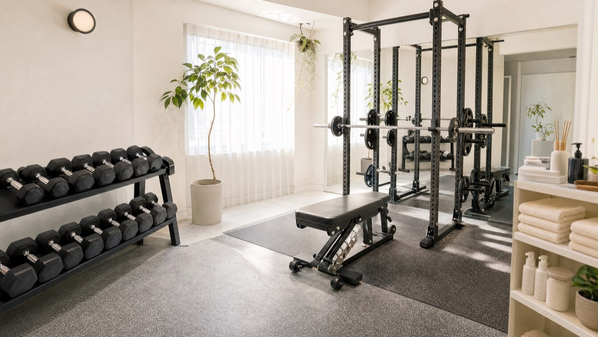
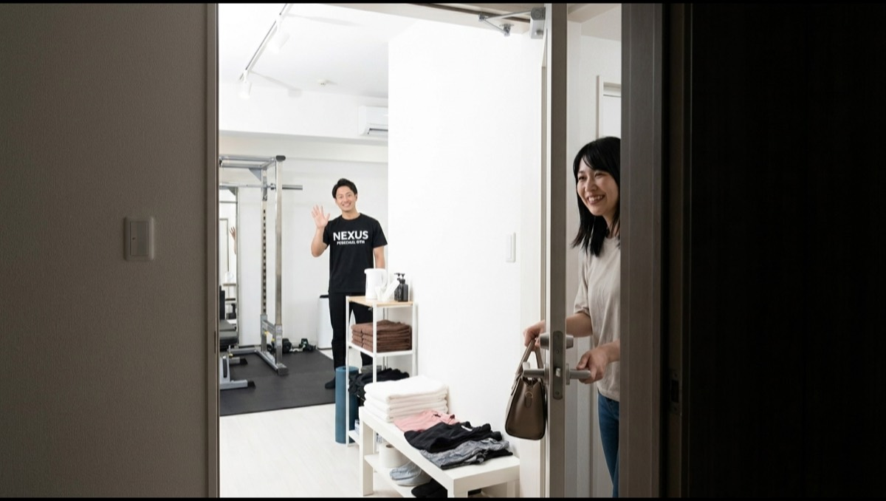
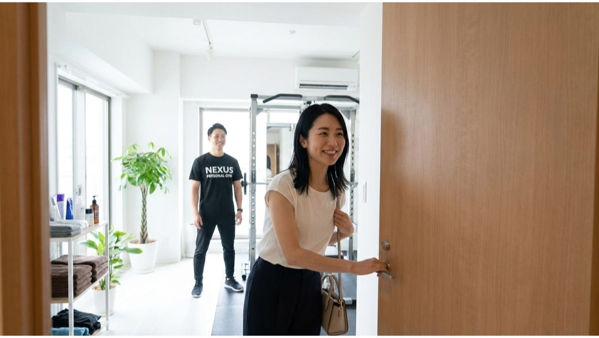
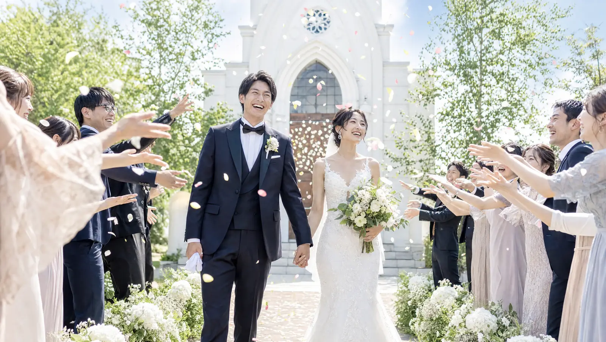

NEXUS Personal Gym ／ 神奈川県川崎市多摩区
NEXUSパーソナルジム 登戸店｜都心の疲れをリセットする完全個室ジム

川崎市多摩区宿河原、小田急小田原線とJR南武線が乗り換えられる登戸駅から通える完全個室パーソナルジムです。登戸は、新宿まで小田急線で直通のベッドタウン。都心で働き、消耗して帰ってくる——そんな毎日を送る方が多い街です。登戸店がコンセプトに掲げているのは、「都心通勤の疲れを、地元でリセットする」こと。会社帰りに都内のジムへ寄る余力はなくても、地元・登戸の完全個室なら、通勤動線の中で無理なく身体を立て直せます。多摩川沿いのリバーサイド立地で、落ち着いた環境も魅力。担当トレーナーと二人だけの完全個室空間だから、人目を気にせず自分のペースでトレーニングに集中できます。しかもオープンしたばかりの今は、予約が取りやすく、一人のトレーナーがあなたにじっくり向き合える贅沢な時期。ウェア・タオル・ドリンク・プロテインまで全部込みのアメニティ完備で、手ぶら通いOK。LINE予約で、仕事や家事の合間にも通えます。登戸店は川崎市内で2店舗目、鹿島田/新川崎店の姉妹店。全国約70店舗・会員継続率96%のNEXUSブランドの指導を、登戸の地で。
- ブライダル対応
- 完全個室
- 登戸駅から
- 小田急・南武線の2線
- 新宿直通のベッドタウン
- 手ぶら通いOK
- NEXUS全国約70店舗
この店舗の特徴
NEXUS登戸店は、川崎市多摩区宿河原にある完全個室パーソナルジム。小田急小田原線とJR南武線が乗り換えられる登戸駅から通える立地です。この店舗がコンセプトに掲げているのは、「都心通勤の疲れを、地元でリセットする」こと。登戸は新宿まで小田急線で直通、都心へ通勤する人が多く暮らすベッドタウンです。満員電車での長い通勤、デスクワーク続きの一日、会議や締め切りに追われる毎日——都心で働く生活は、知らず知らずのうちに身体を消耗させます。「運動したほうがいいのは分かっているけれど、会社帰りに都内のジムへ寄る気力はもう残っていない」。そんな方は少なくありません。登戸店は、その現実に寄り添います。都心まで出て運動するのではなく、地元・登戸に帰ってきてから、通勤動線の中で身体を立て直す。週に1回でも、完全個室で凝り固まった身体をほぐし、姿勢を整える時間を持つことで、都心で消耗しがちな毎日にリズムが生まれます。多摩川沿いのリバーサイド立地は、心を落ち着けるにもぴったりの環境です。完全個室のマンツーマンだから、その日の疲労度や体調に合わせて、無理なく負荷を調整できます。ダイエットや体型改善はもちろん、通勤疲れのリカバリー、姿勢改善まで、目的に合わせてメニューを組めるのがパーソナルトレーニングの強みです。そしてオープン直後の今なら、予約が取りやすく、トレーナーもあなた一人にじっくり時間をかけられます。新店でも指導品質に不安はありません。全トレーナーが3ヶ月の自社教育プログラムを修了し、全国約70店舗・会員継続率96%のNEXUSブランドの基準を満たしています。都心の疲れを、登戸でリセットする。その習慣を、ここから始めてみませんか。
通勤で消耗した身体を、週1で立て直す

都心への通勤は、それだけで身体に負担をかけています。満員電車で同じ姿勢のまま揺られ、オフィスでは一日中デスクに向かい、帰る頃には肩も腰もガチガチ——そんな日々を繰り返すうちに、姿勢は崩れ、疲れが抜けにくい身体になっていきます。登戸店が大切にしているのは、その消耗を「週に1回、地元でリセットする」という考え方です。毎日ハードに追い込む必要はありません。週1回でも、凝り固まった肩・腰・背中をトレーニングとストレッチでほぐし、崩れた姿勢を整えるだけで、身体は少しずつ応えてくれます。適度に身体を動かすと血流が促され、凝りがゆるみ、気分の切り替えにも役立つことは、一般によく知られています。デスクワークで縮こまった胸や、通勤で固まった背中まわりを動かすと、翌朝の身体の軽さが変わってくる方も少なくありません。登戸店では、完全個室のマンツーマンで、その日のあなたの疲労度や体調を見ながら負荷を調整します。疲れている日は無理に追い込まず、姿勢を整え、身体をほぐすことを優先する——そんな“今日の身体に合わせた”トレーニングができるのが、パーソナルの強みです。都心で消耗した身体を、地元・登戸でリセットする。その週1回の習慣が、毎日のコンディションを底上げしてくれます。
オープン直後の、今だけの通いやすさ

新しくオープンした店舗には、その時期ならではの大きなメリットがあります。それが「予約の取りやすさ」と「トレーナーとの距離の近さ」です。登戸店は2026年にオープンしたばかりの新店。会員がまだ増えすぎていない今だからこそ、仕事帰りの時間帯でも希望に沿って予約を取りやすい環境が整っています。都心の人気ジムでは「予約が取りにくくて通いづらい」という声もありますが、オープン直後の登戸店なら、その心配がほとんどありません。さらに、この時期に入会される方は、いわば登戸店の「一期生」。トレーナーがあなた一人にじっくり時間をかけられるので、身体の状態や目標、生活習慣、通勤リズムまできめ細かく把握してもらいながら、丁寧にスタートを切れます。オープニングメンバーとしてトレーナーと関係を築いていく時間は、後から入会する方には得られない、今だけの特別な体験です。「都心通勤で疲れがたまっている」「地元で通えるジムをずっと探していた」「パーソナルジムは気になっていたけれど、なかなか一歩を踏み出せなかった」——そんな方にとって、地元・登戸に新店ができた今は、始めるのに絶好のタイミングです。予約が取りやすく、じっくり向き合ってもらえる今のうちに、ぜひ無料体験にお越しください。オープン直後のゆとりある環境で、気持ちよくスタートを切れます。
手ぶらで来て、手ぶらで帰る


都心通勤で疲れている方にとって、「準備の手間」はジム通いが続かない大きな理由のひとつです。運動着やタオルを揃えてバッグに詰め、忘れ物がないか確認して——ただでさえ疲れている毎日に、この“ひと手間”は意外と重くのしかかります。登戸店は、その手間をまるごとなくしました。ウェア・水・タオル・プロテインまですべて無料でご用意しているので、通勤バッグや買い物帰りのそのままの姿で、手ぶらで立ち寄れます。仕事帰りに「今日はジムに寄ろう」と思い立っても、準備がいらないから足が向く。トレーニングを終えたら、また手ぶらで身軽に帰るだけ。リセットした身体で、多摩川沿いの落ち着いた帰り道を歩けば、一日の疲れも和らぎます。荷物が増えないので、退勤後の予定の前後にも気軽に組み込めます。「わざわざ運動着を持ち歩くのが面倒で続かなかった」という方も、手ぶらで通える手軽さなら、無理なく習慣にできます。来るときも、帰るときも身軽に。登戸店は、都心で消耗した身体を地元でリセットする時間を、できるだけハードルを下げてご用意しています。まずは手ぶらのまま、無料体験にお越しください。
小田急・南武線の2線が使える立地
登戸店の魅力のひとつが、交通アクセスの良さです。登戸駅は、小田急小田原線とJR南武線が乗り換えられるターミナル駅。小田急線を使えば新宿まで直通で、都心へ通勤・通学する方にとって便利なベッドタウンです。南武線を使えば、川崎方面・武蔵小杉・立川方面へもアクセスでき、2つの路線が使えることで通える範囲がぐっと広がります。登戸・宿河原にお住まいの方はもちろん、小田急線の向ヶ丘遊園方面、南武線の中野島・和泉多摩川方面からも通いやすい立地です。都心の混雑したジムを避け、地元で落ち着いてトレーニングしたい方に、ちょうどいい距離感です。営業時間は9:00〜22:00。朝の時間でも仕事帰りの夜でも、生活リズムに合わせて通えます。予約・変更はLINEで完結し、6時間前まで無料でキャンセル可能なので、急な残業や予定変更が多い方でも通いやすい設計です。また、NEXUSは同じ川崎市内に系列店の鹿島田/新川崎店（幸区・JR南武線／横須賀線）もあります。お住まいや職場、その日の予定に合わせて通いやすいほうを選べるのも、系列店ならではの利点です。ご自宅や職場からの動線でいちばん続けやすい店舗を選ぶのが、無理なく通い続けるコツです。
NEXUSブランドの実績
登戸店はオープンしたばかりの新店のため、まだGoogleマップの口コミは集まっていません（現在収集中です）。しかし、指導の品質を裏づけるのは、NEXUSブランド全体で積み上げてきた実績です。NEXUSは全国約70店舗を展開し、会員継続率は96%。全トレーナーが3ヶ月の厳しい自社教育プログラムを修了してからデビューし、「優しく寄り添う指導」を全店共通の基準としています。登戸店のトレーナーも、同じ教育を受けたメンバーです。
同じ川崎市内の系列店鹿島田/新川崎店は、オープン直後からGoogle口コミ★5.0の評価をいただいています。さらに系列の月島店が★5.0（172件）、横浜元町店が★5.0（87件）という高い評価をいただいています（2026年7月時点）。これらの評価は、ブランド全体で共有される指導品質の証です。登戸店も、この同じ基準でみなさまをお迎えします。
新店だからと不安に思う必要はありません。むしろオープン直後の今は、予約が取りやすく、一人のトレーナーがあなたにじっくり向き合える贅沢な時期です。全国で培った確かな指導を、できたばかりの登戸店で、ゆとりある環境で受けられます。まずは無料体験で、トレーナーの質とジムの雰囲気を、あなた自身の目で確かめてみてください。登戸店の最初のメンバーとして、一緒にこの店舗を育てていける今を、ぜひ楽しんでいただければと思います。
まずは無料体験から
「登戸・宿河原で完全個室のパーソナルジムを探していた」「都心通勤の疲れを地元でリセットしたい」「地元で通えるジムがずっとほしかった」——そんな方こそ、まずは無料体験からお試しください。登戸店の無料体験は、カウンセリングであなたの目標や運動経験、生活習慣、通勤リズムをじっくり伺うところから始まります。その上で、姿勢や身体のクセをチェックし、実際にトレーニングを体験。フォームを丁寧に確認しながら進めるので、運動が初めての方でも安心です。オープン直後の今なら予約も取りやすく、トレーナーがあなたにたっぷり時間をかけて、最初の一歩を一緒に踏み出せます。体験も手ぶらでOK。ウェア・タオル・ドリンクもすべてご用意しているので、仕事帰りや買い物のついでに、そのままお立ち寄りいただけます。小田急小田原線・JR南武線の登戸駅から通いやすく、無理な勧誘は一切ありません。都心の疲れを、登戸でリセットする。その習慣を始めるなら、予約が取りやすく、じっくり向き合ってもらえる今がチャンスです。登戸店の一期生として、気持ちのいいスタートを切りませんか。まずは気軽に、無料体験へお越しください。
結婚式前のボディメイクを、登戸で

「ドレスの試着で二の腕が気になった」「背中の開いたデザインを、体型を理由に諦めたくない」——挙式という動かせない期日があるからこそ、ボディメイクは最後までやり切れます。登戸店では、まず挙式日とドレスのデザインをうかがい、背中・二の腕・デコルテ・ウエストという、ドレスでもっとも視線が集まる部位から優先順位をつけていきます。完全個室のマンツーマンだから、人目を気にせず自分の身体とだけ向き合えます。

残された日数によって、やるべきことは変わります。登戸店では挙式日から逆算した90日プラン・60日プランを用意し、「いつまでに、どの部位を、どこまで」を最初に設計します。極端な食事制限で当日フラフラ……ということがないよう、その日のコンディションから逆算する無理のない指導で、式当日にピークを合わせます。会員の約85%が女性で、ブライダルのご相談は日常的。体に不必要に触れないノータッチ指導を基本にしているので、はじめての方も安心です。

週を追うごとに、ドレスの試着で鏡に映る自分が変わっていきます。背中がすっと伸び、二の腕のたるみが引き締まり、デコルテに華やかさが出る。「このデザインで大丈夫かな」から「このドレスを選んでよかった」へ——目標が数字ではなく“当日の自分の姿”だからこそ、モチベーションが途切れません。登戸エリアで挙式を予定されている方は、エリア内の式場への下見や打ち合わせの動線に、そのままトレーニングを組み込めます。

迎えた挙式当日。積み重ねた90日・60日は、鏡の前の安心感になって返ってきます。姿勢よく背筋を伸ばして立ち、写真のどの角度でも堂々といられる——それは、頑張ってきた自分だけが手にできる自信です。登戸店は、その一日のために全力で伴走します。

挙式は、新しい生活のスタートでもあります。せっかく作り上げた身体を、そのまま新生活の習慣に。登戸店は毎日8:00〜23:00営業・月4回18,000円（1回4,500円〜）から続けられるので、挙式後の体型維持から、将来の産後の体型戻しまで長く伴走できます。全国約70店舗のネットワークがあるため、引っ越しや里帰りの際も最寄り店舗へ。「一生に一度」のために始めた習慣が、その後の人生を支える土台になります。
挙式まで残り80日で駆け込みました。背中の開いたドレスに合わせて、二の腕と背中を中心にプランを組んでもらい、当日は自信を持って写真に写れました。式後もそのまま通っています。
上記はサービス内容をわかりやすく伝えるためのモデルケース（イメージ）であり、実在するお客様の口コミではありません。Google口コミは本ページ内の該当セクションに実際の内容を要約して掲載しています。
挙式日からの逆算タイムライン｜ブライダル専用ページを見る料金プラン
入会金は通常55,000円、無料体験当日入会で15,000円（税込）に割引。AI食事指導は月額3,000円（税込）。全店舗共通の料金です。
アクセス
- 店舗名
- NEXUSパーソナルジム 登戸店
- 住所
- 〒214-0021
神奈川県川崎市多摩区宿河原1-29-3 リバーサイド登戸103 - 最寄り駅
- 小田急小田原線／JR南武線 登戸駅
- 営業時間
- 毎日 9:00〜22:00
- 電話番号
- 050-1790-8499
登戸店のよくある質問
Q登戸・向ヶ丘遊園にパーソナルジムはありますか？+
Q仕事で疲れていても運動して大丈夫ですか？+
Q鹿島田/新川崎店と併用できますか？+
Q挙式まで3ヶ月ですが、結婚式に間に合いますか？+
Qドレスで気になる背中や二の腕を集中的に絞れますか？+
Q結婚式が終わった後も通い続けられますか？+
よくある質問（全店共通）
料金・制度などNEXUS全店に共通するご質問です。さらに詳しくは110問のFAQをご覧ください。
Q料金はいくらですか？+
Q手ぶらで通えますか？+
Qキャンセルはいつまでできますか？+
Q食事指導はありますか？+
Qトレーナーはどんな人ですか？+
Q女性会員は多いですか？+
Q体験の流れは？+
NEXUSパーソナルジムの特徴・料金をもっと見る